Eesti Ilm · Design Book · “Loojang” · version 4 · 27 November 2026
Eesti Ilm
Design Book
The new look, version 4: the app icon, the color palette, the app type scale, the weather symbols and the website. Screens, widgets and the App Store come in later versions (see Next).
1Positioning
Our main competitor, ILM+ (the Environment Agency's official app), is one saturated ultramarine with a yellow sun and white line art, like most weather apps. Eesti Ilm takes the opposite side: the warm, calm light of an Estonian evening.
2App icon
A pale sun setting behind a soft cloud, on a plum-to-coral dusk sky (“Loojang”). Two layers, no text. It is built in Icon Composer, so iOS adds the Liquid Glass highlights and shadows.
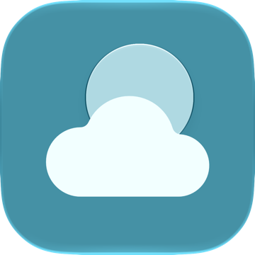
Construction
| Measure (1024 canvas = 100) | Value |
|---|---|
| Sun | circle, centre (54.8, 38.2), radius 21.1 |
| Cloud | one closed outline: three round bumps (radius 10, 13, 9) with 2.5 valley fillets on a flat bottom, scaled 1.364, 63.8 wide |
| Group bounds | x 18–82, y 17–77, centred left to right, visual weight at (51.6, 51.7) |
| Proportion | cloud width ÷ sun diameter = 1.52 (close to 1.6) |
| Overlap | the cloud covers the lower half of the sun |
| Safe area | all shapes stay inside the central 80% (dashed) |
The cloud must stay one path. Built from overlapping circles, its edge shows seams and a doubled Liquid Glass rim.
Icon Composer settings
| Layer | Default | Dark | Tinted | Glass and effects |
|---|---|---|---|---|
| Background | #3B2C5A → #F29E7A | #15111F → #4A2C3C | set by iOS | linear gradient, top to bottom |
| Group 1 · Cloud (top) | #FFFFFF, opacity 90% | #E8DDEE, opacity 90% | #FFFFFF, opacity 100%, Liquid Glass off | Liquid Glass on, translucency 40%, specular, neutral shadow 50% |
| Group 2 · Sun | #FFD9A0 | #F7C58A | #A6A6A6 | specular, neutral shadow 50%, no translucency |
Why the tinted colors: iOS builds tinted icons from brightness only. A white cloud over a light-grey sun keeps the two shapes apart (cloud 4.5 : 1 to the background, 1.8 : 1 to the sun). With the default colors they merge into one blob.
Do and don't


3Palette · Loojang
The colors and their roles, each with a light and a dark value. Click a color to copy its hex value. How they are applied to screens and widgets is decided in a later version.
Rules
- Use the accent sparingly: selected states, buttons, links. Never for large backgrounds.
- Temperatures below 0° use the cold color, 0° and above the warm color. Always keep the minus sign, so the meaning never depends on color.
- The dusk gradient and the pale sun belong to the icon and the brand, not to UI text.
Contrast (WCAG 2.1, computed)
4Type · iOS app & widgets
Apple's system fonts, built on iOS Dynamic Type text styles. SF Pro Rounded gives temperatures and key headings Loojang's calm warmth; standard SF Pro keeps descriptions, place lists and Settings crisp and native. Zero bundled font files, full Estonian glyph coverage (õ ä ö ü š ž), and tabular digits on every temperature.
Font pairing · SF Pro Rounded + SF Pro
- SF Pro Rounded for temperatures and major headings: screen large titles (
Forecasts,Settings), card headers (Day,Night) and every temperature reading across app and widgets. It echoes the soft shapes of the Loojang icon and the website's Nunito headings without adding a third-party font. - SF Pro for prose and UI chrome: weather descriptions, date section headers, place names, Settings rows, the data source note, and widget date and phenomenon captions stay in standard SF Pro so multi-line text and 11–15 pt labels remain quiet and easy to scan.
- Tabular digits everywhere a temperature appears: fixed-width numerals (
monospacedDigit) keep trailing temperatures aligned in place lists and stop numbers jumping when values update. - True minus sign (
−, U+2212) and en dash (–): always keep the minus sign on below-zero temperatures, so sub-zero readings never rely on color alone.
Compare: all SF Pro vs. recommended pairing
Same forecast card with Loojang colors. Plain SF Pro feels neutral and utilitarian; adding SF Pro Rounded to card headings and temperatures warms the card without making the description paragraph bubbly. (Weather icons here are simple placeholders until the Weather symbols iteration.)
Cloudy with brief sunny spells. Light rain or sleet on the coast; southwest wind 5–10 m/s.
Cloudy with brief sunny spells. Light rain or sleet on the coast; southwest wind 5–10 m/s.
Type scale
Every text element in EstonianWeather and EstonianWeatherWidget maps to a built-in iOS text style. Sizes below are at the default Dynamic Type setting (Large).
| Element | iOS text style | Default (L) | Font & weight | Color token | Sample |
|---|---|---|---|---|---|
| App · Forecasts | |||||
| Screen title | largeTitle |
34 pt | SF Pro Rounded · Bold | Text | Forecasts |
| Date section header | headline |
17 pt | SF Pro · Semibold | Secondary text | 27. november, reede |
| Day / Night header | title2 |
22 pt | SF Pro Rounded · Semibold | Text | Day · Päev · Öö |
| Day / Night temperature | title2 |
22 pt | SF Pro Rounded · Semibold · tabular | Cold / Warm (dash: Secondary) | −3° – 4° |
| Weather description | body |
17 pt | SF Pro · Regular | Text | Mostly cloudy with light rain. |
| Place name | subheadline |
15 pt | SF Pro · Regular | Text | Kuressaare · Jõhvi |
| Place temperature | subheadline |
15 pt | SF Pro Rounded · Medium · tabular | Cold / Warm | −2° 4° |
| App · Settings, About & shared | |||||
| Settings row label | body |
17 pt | SF Pro · Regular | Text | Current language |
| Settings row value | body |
17 pt | SF Pro · Regular | Secondary text | English · Eesti |
| About bio · inline nav title | body · headline |
17 pt | SF Pro · Regular / Semibold | Text | About me · Minust |
| Loading / error state | headline |
17 pt | SF Pro · Semibold | Text | Loading |
| Data source note | caption1 |
12 pt | SF Pro · Regular | Secondary text | Estonian Environment Agency |
| Data source link | caption1 |
12 pt | SF Pro · Medium | Accent | ilmateenistus.ee |
| Widgets · Small & Medium | |||||
| Widget date | caption1 |
12 pt | SF Pro · Medium | Secondary text | Today · Sat |
| Widget temperature · Small | title2 |
22 pt | SF Pro Rounded · Semibold · tabular | Cold / Warm | −3° – 4° |
| Widget temperature · Medium | callout |
16 pt | SF Pro Rounded · Semibold · tabular | Cold / Warm | −3° – 4° |
| Widget phenomenon · Small / Medium | caption1 · caption2 |
12 pt · 11 pt | SF Pro · Regular | Text (empty: Secondary) | Light snow · Lörts |
Note: collapsed inline navigation bar titles (About me, scrolled Forecasts) stay in standard UIKit SF Pro Semibold (headline) so the compact bar feels native to iOS.
Color roles in light and dark
Every text color comes directly from the Loojang palette. In temperature ranges crossing zero, each bound uses its own color (Cold below 0°, Warm at 0° and above) while the en dash stays in Secondary text. Sun, Cloud and the dusk gradient are never used for text.
Today
Mostly cloudy with occasional snow showers inland. East wind 4–9 m/s.
The weather information is provided by
Estonian Environment Agency
Täna
Pilves selgimistega ilm. Kohati sajab lund ja lörtsi, puhub idatuul 4–9 m/s.
Ilmateabe toob teieni
Keskkonnaagentuur
Dynamic Type scaling
App text scales uncapped through iOS UIFontMetrics all the way to AX5 (accessibilityExtraExtraExtraLarge), with zero fixed heights and zero forced truncation. Widgets live on fixed Home Screen tiles, so they scale cleanly within a bounded range.
| Text style | xSmall | Large (default) | XXXL | AX1 | AX3 | AX5 | App & widget behavior |
|---|---|---|---|---|---|---|---|
largeTitle | 31 | 34 | 40 | 44 | 52 | 60 | Uncapped; collapses into inline bar on scroll |
title2 | 19 | 22 | 28 | 34 | 44 | 56 | App: uncapped, temp stacks under title at AX1+. Small widget: capped at AX1 + 0.6 scale factor |
headline | 14 | 17 | 23 | 28 | 40 | 53 | Uncapped; wraps freely (numberOfLines = 0) |
body | 14 | 17 | 23 | 28 | 40 | 53 | Uncapped; Settings value rows stack automatically at AX1+ |
callout | 13 | 16 | 22 | 26 | 38 | 51 | Medium widget temp: capped at XXXL + 0.6 scale factor |
subheadline | 12 | 15 | 21 | 25 | 36 | 49 | Uncapped; icon cap lifts at AX1+, temp stacks under place name at AX3+ |
caption1 | 11 | 12 | 18 | 22 | 32 | 43 | App disclaimer: uncapped, wraps. Widgets: capped at XXXL (2 lines max on phenomenon) |
caption2 | 11 | 11 | 17 | 20 | 29 | 40 | Medium widget phenomenon: capped at XXXL, up to 3 lines + 0.6 scale factor |
Today
Cloudy with brief sunny spells and light coastal sleet.
Today
Cloudy with brief sunny spells and light coastal sleet.
Contrast (WCAG 2.1, computed)
Every app and widget text pair passes WCAG AA (4.5 : 1) at normal text size in both light and dark modes — no element relies on the 3 : 1 large-text exception.
5Weather symbols
Filled SF Symbols in palette mode, colored strictly from the Loojang palette. Shared by the app and the widget through WeatherPhenomenonIcon, so every forecast reads the same everywhere.
Rendering mode
Filled symbols match the soft solid shapes of the app icon. Palette rendering gives each weather element its Loojang color without Apple's bright blue-and-yellow multicolor look.
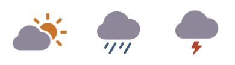
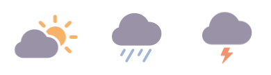
Filled palette mode with Loojang tokens. Used in the app and in full-color widgets.
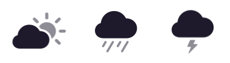
Filled hierarchical mode. Keeps cloud and weather layers apart when iOS strips custom colors.
Apple's system multicolor draws white clouds that vanish on light cards, plus bright yellow and cyan.
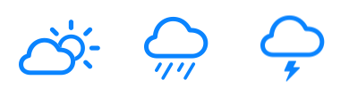
Current app style. Thin line art breaks the “soft solid shapes” principle and falls back to monochrome tint.
- UIKit (app):
UIImage.SymbolConfiguration(paletteColors:)with dynamic Loojang colors from the asset catalog, combined with the text-style configuration. - SwiftUI (widget):
.symbolRenderingMode(.palette)with.foregroundStyle(primary, secondary, tertiary)in.fullColor; switch to.symbolRenderingMode(.hierarchical)with.foregroundStyle(.primary)wheneverwidgetRenderingMode != .fullColor.
Layer colors
Every symbol layer uses an existing Loojang token — no new colors are added to the palette.
| Semantic layer | Loojang token | Light | Dark | Used for |
|---|---|---|---|---|
| Sun & stars | Sun | #C9762C | #F7B26A | Sun disc and rays (sun.max.fill, cloud.sun.fill), stars (moon.stars.fill) |
| Moon (night) | Cold | #3D5A80 | #9DB6D8 | Crescent moon (moon.stars.fill, cloud.moon.fill) — cool twilight slate separates cleanly from Cloud in dark mode |
| Cloud & wind | Cloud | #8E8699 | #9A92A6 | All cloud bodies, wind curves (wind.snow), thermometer shell (thermometer.snowflake) |
| Precipitation & fog | Precipitation | #3D5A80 | #9DB6D8 | Drizzle, rain, heavy rain, snow, sleet raindrops, hail, glaze mercury & snowflake, fog bars |
| Lightning | Accent | #B0452C | #F2936F | Lightning bolt in cloud.bolt.fill — warm terracotta/coral storm accent, passes 5.6 : 1 on light cards without neon yellow |
SF Symbols layer grouping (verified on Xcode 27.2): Two weather symbols share Layer 1 across two elements. In cloud.sleet.fill, Apple places both the cloud and the snowflakes on Layer 1 (Cloud) and the raindrops on Layer 2 (Precipitation). In cloud.bolt.rain.fill, Apple places both the cloud and the bolt on Layer 1 (Cloud) and the raindrops on Layer 2 (Precipitation) — a third palette color is ignored. In thermometer.snowflake, Layer 1 is the mercury, Layer 2 is the snowflake, and Layer 3 is the thermometer shell ([Precipitation, Precipitation, Cloud]).
Day and night
Each Estonian forecast day has a Night part and a Day part. Clear and partly cloudy phenomena switch between sun and moon symbols; overcast, precipitation, fog, and thunder stay identical day and night.
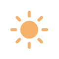
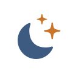
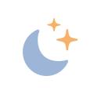
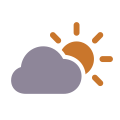
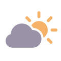
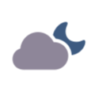
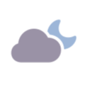
Why moon.stars.fill instead of plain moon.fill: on iOS, a lone crescent reads as Focus or Dark Mode, whereas moon and stars immediately read as a clear night sky. Currently WeatherPhenomenonIcon has no day/night parameter, so the Night forecast shows a sun; adding a day-part argument fixes that in the implementation pass.
Full symbol set
All 16 SF Symbols that cover the 33 forecast phenomena from ilmateenistus.ee (plus fallback), shown on Light Card (#FFFFFF) and Dark Card (#201B29).
Phenomenon mapping
Audit of every phenomenon string in WeatherPhenomenonIcon against the proposed mapping. Five deliberate changes replace outline icons, add night variants, fix smoke for clouds, separate blowing snow (tuisk), and separate thunder-rain (äikesevihm). Rain showers keep the three-step drizzle / rain / heavy-rain scale so intensity stays legible at 22 pt.
Sizes
The four optical sizes used in the app and widget. App symbols scale with Dynamic Type; the 22 pt place-row column cap lifts at accessibility sizes so icons are never clipped.
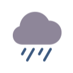
28 · Medium widget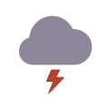
36 · Small widget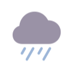
28 · Medium widget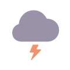
36 · Small widgetTinted and clear widgets
In tinted and clear Home Screen modes, iOS strips custom palette hues. Keeping .palette can collapse two colors of similar brightness into one flat shape — the same failure shown in the app icon's tinted section. Switching to .hierarchical whenever widgetRenderingMode != .fullColor gives iOS automatic two-tone opacity depth (100% cloud, ~50% sun, moon, rain, snow, or bolt), and filled silhouettes stay solid over photographic wallpapers.
Contrast (WCAG 2.1, computed)
Weather symbols are non-text graphics (3 : 1 target against Card and Background). Every symbol layer — Cloud, Sun, Precipitation, Moon (Cold), and Lightning (Accent) — passes 3 : 1 on both Card and Background in light and dark modes, and every text label passes WCAG AA. Light Sun was deepened to #C9762C so clear and partly cloudy symbols stay crisp on white cards while remaining distinctly amber next to rust Accent (#B0452C).
6Website · eestiilm.app
The design of eestiilm.app: a quiet page in the app's colors that gets people to the App Store, plus support, privacy and 404 pages. The site is built from this section (EES-113).
Direction · “Quiet paper”
- The page is the warm Background color, with no large gradient areas.
- A thin dusk horizon line sits under the header and under the home page hero: 4 px tall, a horizontal gradient from
#3B2C5Ato#F29E7A, the same in light and dark. It is the only gradient in the page layout.
- A centred hero: the app icon (156 px desktop, 116 px phone), an eyebrow line, the H1 pitch, a short paragraph, then the App Store badge on its own, centred, with clear space of at least a quarter of its height.
- “Source code on GitHub” is only in the footer, not in the hero (owner decision, 27 November 2026, replacing the ticket's hero link). The support page keeps its “Report a problem” card and the source code question.
- Three features in columns divided by hairlines, one column on phone. One feature shows temperatures in Cold and Warm (−3° / 4°), always with the minus sign.
- The screenshots area is a placeholder until the app screens iteration and the landing visuals ticket.
- A · Dusk hero: rejected.
- C · Sky window: rejected.
- The site must not look like ILM+ or suggest it is official. The data source is credited, never presented as a partner.
Typography
Nunito ExtraBold (800) for headings and the “Eesti Ilm” wordmark. Body text in the system font: system-ui, -apple-system, "Segoe UI", Roboto, sans-serif.
| Style | Desktop | Phone | Font |
|---|---|---|---|
| H1, home page | 64 px | 38 px | Nunito 800 |
| H1, other pages | 48 px | 36 px | Nunito 800 |
| H2 | 26–28 px | 22–24 px | Nunito 800 |
| Feature titles · card titles | 21 px · 19 px | 21 px · 19 px | Nunito 800 |
| Body | 17 px, line height 1.6 | System | |
- Nunito is self-hosted on eestiilm.app, never loaded from Google Fonts, so the privacy policy needs no third party for fonts. One file,
nunito-800.woff2, with the Latin and Latin Extended subsets (they cover õ ä ö ü š ž). This book loads the same file fromassets/website/. - Chrome is the priority browser. Nunito replaces the earlier
ui-roundedidea, becauseui-roundedonly renders in Safari. - The iOS app and widgets use Apple's system fonts (see Type); the site keeps Nunito.
Layout
- Content 1080 px wide with 40 px side padding on desktop.
- 20 px side padding on phone.
- The icon (32 px) and “Eesti Ilm” as text, links to Support and Privacy, and an EN / ET switch.
- The active language is a filled pill in the Text color.
- On phone the text links are hidden; they are also in the footer.
- Links to Privacy policy, Support and Source code on GitHub, the data credit, and “© 2026 Eesti Ilm”.
- Centred on desktop, left-aligned on phone.
- Data credit: “Forecast data comes from the Estonian Environment Agency (ilmateenistus.ee). Eesti Ilm is an independent app and is not affiliated with the agency.”
Links, buttons, focus
- Links in text: Accent, 1 px underline, 2 px on hover.
- Navigation and footer links: Text color, no underline until hover. The current page in the navigation is Accent and semibold.
- Buttons: Accent fill with On-accent text, 12 px radius, 48 px tall. On-accent is not a new color: it is Card (
#FFFFFF) in light and Background (#15121C) in dark, as on this book's own number badges. - Focus: a 2 px Accent outline with a 3 px offset.
- Icons in features and contact cards: 22 px line icons in Accent on a rounded square (46 px, 14 px radius; 42 px, 12 px radius in cards). The square is Card on the page and Background inside a card.
App Store badge
The site uses Apple's official “Download on the App Store” badge, unmodified, as the App Store marketing guidelines ask: black in light mode, white in dark mode, at least 40 px tall (52 px in the hero), with clear space of at least a quarter of its height. The Estonian pages use Apple's Estonian badge (the two on the right). The SVGs come from Apple's marketing tools and are in assets/website/.
Pages
Every page has the same header, horizon line and footer, and follows the system light or dark setting. The mockups follow the EES-119 prototype boards, drawn at 1280 px (desktop) and 390 px (phone) and scaled to fit.
- Support: H1, a lead line, two contact cards (“Email”, and “Report a problem” on GitHub), and a FAQ of native disclosure rows with no JavaScript.
- Privacy policy: a 680 px text column, a “Last updated” line and a short summary card. H2s have 48 px of space above them. Desktop adds an “On this page” list on the left; phone hides it.
- 404: a centred cloud (the icon's cloud shape, in the Cloud color), the “404” label, “Page not found”, the body text from
en.json, and a “Go to the home page” button.
The mockup copy is the draft from the prototypes and still needs the owner's check, including the hero, the three features, and “places across Estonia”. The support answers and the privacy text are sample text that shows the layout, not the real content. [Bracketed text] is a placeholder. On the site all English text comes from src/i18n/en.json through Crowdin, never hard-coded.
Home
Support
Privacy policy
404
Icons and share image
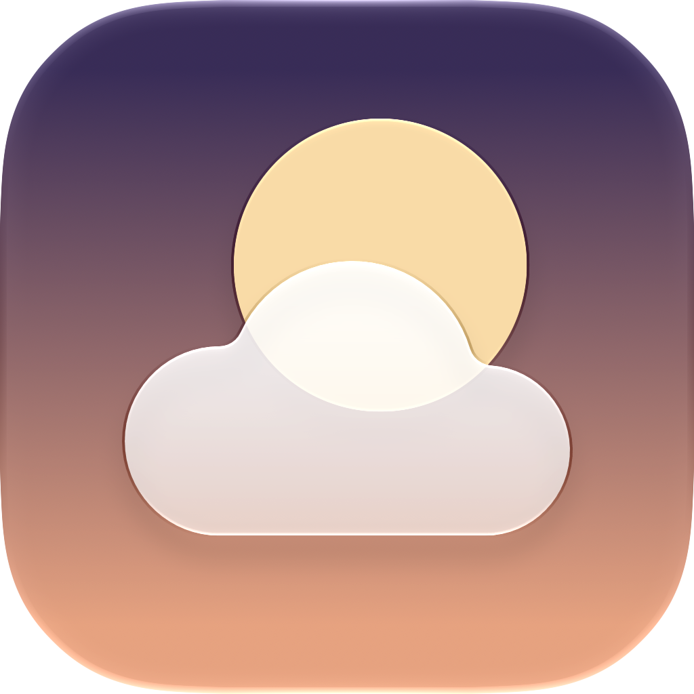
apple-touch-iconfavicon.svg: the dusk gradient square (22% corner radius) with the sun and cloud from the icon's shapes. It reads at 16 px, so it needs no simplified version.favicon.ico: a 32 × 32 fallback.apple-touch-icon.png: 180 × 180 square fromicon-1024.png. iOS rounds the corners itself.og-image.png, 1200 × 630, one image for both languages: Background, the icon on the left, “Eesti Ilm” in Nunito and “eestiilm.app” in Accent, with the horizon line along the bottom edge. No pitch sentence, so nothing in it needs translating. Light only, because link previews do not follow dark mode.
Contrast (WCAG 2.1, computed)
Website text pairs need 4.5 : 1 (AA); the focus ring, the 404 cloud and the icons are non-text and need 3 : 1. The share image uses Accent on Background in light only. The App Store badge is Apple's artwork and is not part of the palette.
7Next
Not decided yet; each gets its own iteration before it joins this book.
- Screens: how the palette applies to the forecast list and Settings.
- Widgets: background, layout and colors of the small and medium widgets.
- App Store: screenshots and how the icon appears in the listing.
- Website screenshots: the home page screenshots area, after the app screens iteration.
Files
assets/icon/EestiIlm.icon· the Icon Composer source of the app iconassets/icon/icon-1024.png· flat 1024 exportassets/icon/icon-*.png· renders of each appearanceassets/website/nunito-800.woff2· Nunito ExtraBold, Latin and Latin Extended, the file the site self-hostsassets/website/Nunito-OFL.txt· the font's SIL Open Font Licenseassets/website/app-store-badge-{en,et}-{black,white}.svg· Apple's official App Store badges, from Apple's marketing toolsassets/symbols/*.png· SF Symbol renders for light and dark cards, rendering modes, and tinted/clear widget previews
Renders made with Xcode 27.2 Icon Composer (ictool) and macOS 27.2 SF Symbols.